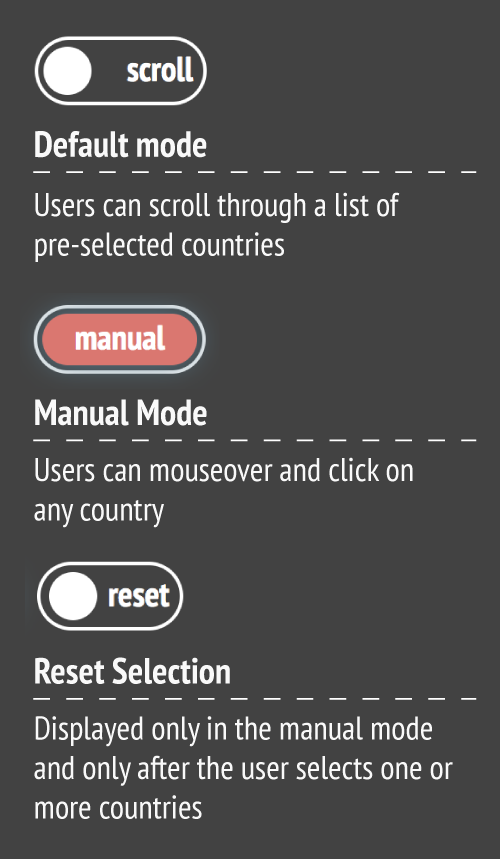

By Julia Janicki & Sylvia Janicki
Global fire patterns are visualized based on NASA's FIRMS data, focusing on MODIS only and not VIIRS. The MODIS satellite take a ‘snapshot’ of events as it passes over the earth and each active fire detection represents the center of a 1km pixel flagged as containing one or more fires. This visualization can inform us which countries and what time of the year fires most frequently occur by visualizing the fire counts by month and year, fire counts by country by year, and country rankings by year. Why do certain countries have so many fires? Causes can be related to climate conditions, agricultural practices, volcanoes, and more. Many fire evnets over the past decade have lead to deforestation in many regions, from the Amazon to the Congo basin to Indonesia.
Note: Since FIRMS data have a 2-3 month lag, 2019's data is available until September so the fire counts for 2019 would be lower than expected, in particular for countries such as Australia. The visualization will be updated in February when the complete dataset is available.
Display 'read-chart' instructions
Number Fires Detected by Year
Analysis Not Available
Note: Since FIRMS data have a 2-3 month lag, 2019's data is available until September so the fire counts for 2019 would be lower than expected, in particular for countries such as Australia. The visualization will be updated in February when the complete dataset is available.
Yearly data in csv format has been downloaded from NASA's FIRMS (Fire Information For Resource Management System) Website. This particular visualization has focused only on data acquired by MODIS (Moderate Resolution Imaging Spectroradiometer).
The csv data was downloaded and included fields such as date, latitude and longitude. A python script was written to assign each location to a country and count the number of fires by country and by month. The total number of records of fire detection was over 40 million.
The Amazon is burning at record rates—and deforestation is to blame. - National Geographic
The Amazon, Siberia, Indonesia: A World of Fire - The New York Times
Record Temperatures and Wildfires in Eastern Russia - NASA
2010 Russian wildfires - Wikipedia
Indonesian fires burnt 1.6 million hectares of land this year: researchers - Reuters
Indonesia’s fires are bad, but new measures prevented them from becoming worse - Science
Forest Fire Situation in Kazakhstan - Karim Khaidarov & Arkhipov V.A.
Global Volcanism Program, 2011. Report on Nabro (Eritrea) - Wunderman R.
Data visualization (design & coding): Julia Janicki
Research and narratives: Sylvia Janicki & Julia Janicki
Data cleaning & processing: Julia Janicki & Lodovico Oldani
December 2019